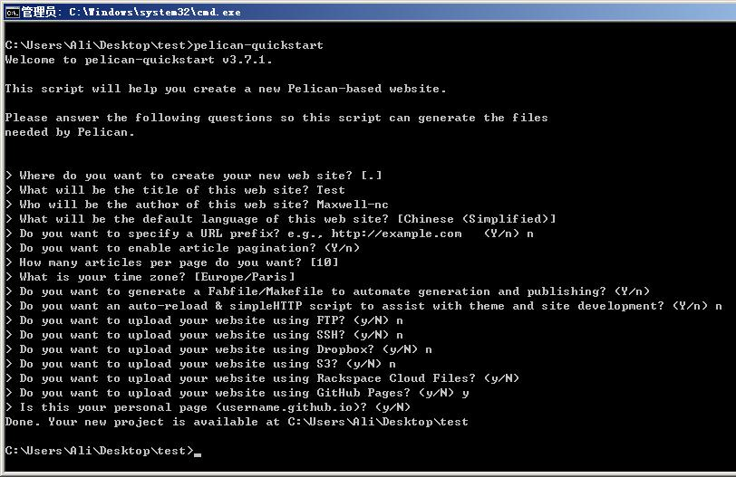
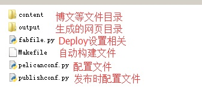
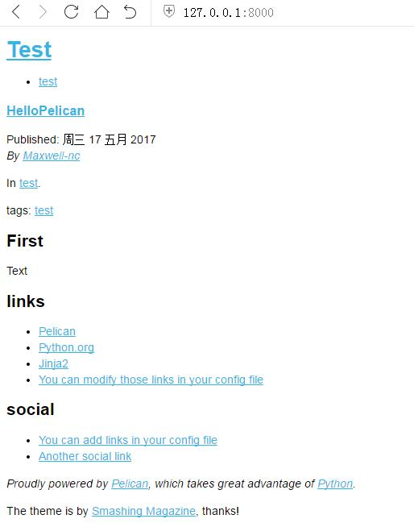

首先Pelican的知名度在国内明显没有Hexo的高，导致也没有几篇教程。遂写一篇简单的Windows搭建教程，给小白们快速使用Pelican搭建静态博客并且发表到Gtihub Pages上。
在Windows下搭建pelican环境可以说完爆Jekyll,如果熟悉Python，甚至比Hexo还要简单，闲话不多说，直接开干。
因为Pelican是基于Python开发的，所以首先得安装Python环境。我目前使用的是Python 3.6.1，这个版本再Windows安装的话连环境都不需要手动配置即可完成。
接下来需要使用Python包管理工具，建议没有安装pip的可以使用easy_install安装：
easy_install pip
安装完成后使用pip安装pelican和markdown
pip install markdown
pip install pelican
如果一切正常的话，恭喜已经搭建完成Pelican环境了，是不是很简单？
首先你需要一个存放你的博客的目录，进入到目录里面，打开cmd，输入下面命令可以生成一个基本的博客模板：
pelican-quickstart
如下图所示会询问你一些设置，这些设置会生成对应的pelicanconf.py配置文件和Makefile文件，不过Windows下由于不能使用Makefile，所以这里即使填错选项也可以待会在修改。

如果提示"Done. Your new project is available at xxx path"这样就是已经生成成功。
下面我们来观察下生成的文件：  注意的是publishconf.py完全导入pelicanconf.py文件，所以前者用于本地调试使用，后者发布时自动替换某些属性，例如SITEURL，不过由于我们不使用Makefile，所以直接使用pelicanconf.py文件即可。
fabfile.py里面包括各种Deploy相关的配置和操作，可以在里面修改默认的本地服务器端口，一般来说都不需要修改。下面我们来写第一篇博客试试。
我们首先写一篇HelloPelican文章然后生成发布到本地瞧瞧是怎么个样子。上文说过content目录是用来存放博文等文件目录的，直接在目录里面新建一个文件test.md(本文使用MarkDown来编辑，pelican也支持reStructuredText)。
Title: HelloPelican
Date: 2017-05-17
Category: test
Tags: test
Slug: blog/hello
Author: Maxwell-nc
##First
Text
其中Title等字段用来声明博客的属性，Slug为对应生成html的相对路径，如果上述最终生成路径是blog目录下的hello.html,这些字段还可以自定义，这个进阶内容可以后面再说。出去属性声明外的部分都是正文内容，##First就是正文的开始了。
简单编辑后就可以尝试生成html，并且在本地预览了。生成html可以使用下面的命令：
pelican content
生成成功后，使用下面命令启动本地服务器：
python -m pelican.server
如果需要临时指定非默认端口也可以在命令后面添加端口参数，如设置8080端口：
python -m pelican.server 8080
如果服务器启动成功，就可以通过浏览器访问http://127.0.0.1:8000来预览下效果：  可以看到已经生成博客成功，这样就已经完成了一大步了。
通过上文，我们已经成功添加第一篇博客，但是很快会发现，如果你往content目录里面添加一个images文件夹存放博文的图片，你会发现pelican content并不会复制images文件夹到output目录下。这种不需要编译但又要用到的文件，我们称它为“静态文件”。pelican默认不会复制静态文件到output目录，需要我们在pelicanconf.py配置文件上面配置一下,添加一行：
STATIC_PATHS = ['images']
这样就会生成output资源时就会自动把iamges文件夹拷贝到output目录了。另外使用EXTRA_PATH_METADATA也可以把某个目录的文件映射过去，例如favicon.ico放在content/extra目录下，最后需要生成到output的根目录，可以添加：
STATIC_PATHS = ['images', 'extra/favicon.ico']
EXTRA_PATH_METADATA = {
'extra/favicon.ico': {'path': 'favicon.ico'}
}
由于Windows不能使用makefile，不能使用make html这样快捷的方法来生成Html，所以我们利用Windows的批处理做一个简单的"Makefile"。
在博客根目录下新建一个auto-update.bat批处理文件，修改内容为：
@echo off
setlocal enabledelayedexpansion
for /f "delims= tokens=1" %%i in ('netstat -aon ^| findstr "8000"') do (
set a=%%i
goto job
)
:job
taskkill /F /pid "!a:~71,5!"
pelican content
cd output
start cmd /c "python -m pelican.server 8000"
cd ..
上面的代码内容是找到已经运行的服务器程序，结束它，然后重新生成Output文件，并且重新打开本地服务器。如果要修改端口可以替换bat文件中的端口号。有了这个脚本，以后需要更新预览，只需要在博客目录下打开CMD，输入auto-update.bat，敲一下回车就能自动完成了。
注意：在pelicanconf.py添加DELETE_OUTPUT_DIRECTORY = True可以每次生成html前都删除Output目录的文件，防止一些缓存导致的问题。
很简单，把Github.io项目拉下来，用Output目录里面的内容替换掉，push上去刷新就能看到了。不过这里需要注意的是是否配置了RELATIVE_URLS这个相对路径设置，SITEURL也要设置成Pages的地址，否者Feed的xml地址将显示不完全，编译的时候也会提示：
"WARNING: Feeds generated without SITEURL set properly may not be valid"。所以这些都要手动检查清楚后再发布。
如果没有什么特别的需求的话，教程就到这里结束了，但是对于官方简陋的主题很多人都希望换一个主题。如果你使用过Hexo的主题甚至修改过，那恭喜你，这一步对于你来说十分简单。
首先我们可以在https://github.com/getpelican/pelican-themes找一个合心意的主题，然后拉下来，解压到博客目录下的Theme目录（这个目录是自己建立的，你可以起的别名字）,在pelicanconf.py下增加一行:
THEME = 'Theme/nest'
其中这个nest是你的主题的目录名，本博客采用的是基于nest修改的主题，可以在https://github.com/maxwell-nc/nest找到源代码，感谢它的作者。言归正传，添加了这行之后理论上就可以重新生成发布就可以看到了，但是要注意有些主题需要额外的参数，具体看每个主题页面的ReadMe，这里就不一样介绍了。
下面我们来简单进阶一下，尝试一下修改主题（注意这需要一点点Html知识）。下面以在博文最后添加转载信息为例。
首先我们打算在每篇文章的头部添加一个自定义字段Reprint，这个字段代表转载地址字段，如果这个字段有值，则显示“转载文章”，否则显示“原创文章”。我们进入主题目录中的templates目录，templates代表模板的意思，其中article.html就是每篇文章的生成的模板。html中article.content是正文的内容，我们一直定位到article.content位置，在下面添加，
{{ article.content }}
<br/><br/>
<p style="color: #eb2344;"><b>
{% if article.reprint %}
本文为转载文章，原文链接：<a href="{{ article.reprint }}" target="_blank">{{ article.reprint }}</a>
{% else %}
原创文章，欢迎转载，请保留出处。有任何错误、疑问或者建议，欢迎指出。
{% endif %}
</b></p>
<br/><br/>
新增的字段可以用article.reprint来访问，支持使用{% if article.reprint %}结合{% else %}和{% endif %}的组合来实现判断。
接下来可以在一篇文章的头部，如果是转载文章，可以添加Reprint属性来声明转载文章，实现自动显示转载信息：
Title: xxx
Date: 2017-05-17
Category: xxx
Tags: xxx
Slug: blog/xxx
Author: Maxwell-nc
Reprint: https://github.com/maxwell-nc
主题的修改除了添加转载信息之外还以修改主题的布局等等功能，除了if条件表达式还有for表达式等等的功能，或者添加评论插件、音乐播放器等等，更多的功能可以参考官方文档，这里就不重复了。
Pelican入门的成本非常低，如果只要普通做个静态博客，相信只要一杯咖啡的时间，但是Pelican的功能远不止上述这些，本文只是抛砖引玉，感兴趣的朋友可以看看参考文章中的官方文档。
Pelican官方文档：http://docs.getpelican.com/en/3.7.1/index.html
原创文章，欢迎转载，请保留出处。有任何错误、疑问或者建议，欢迎指出。